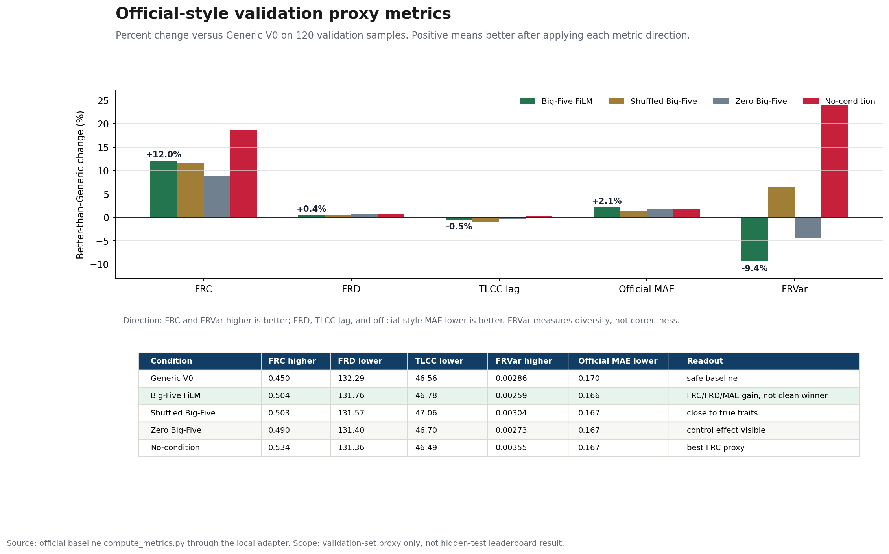
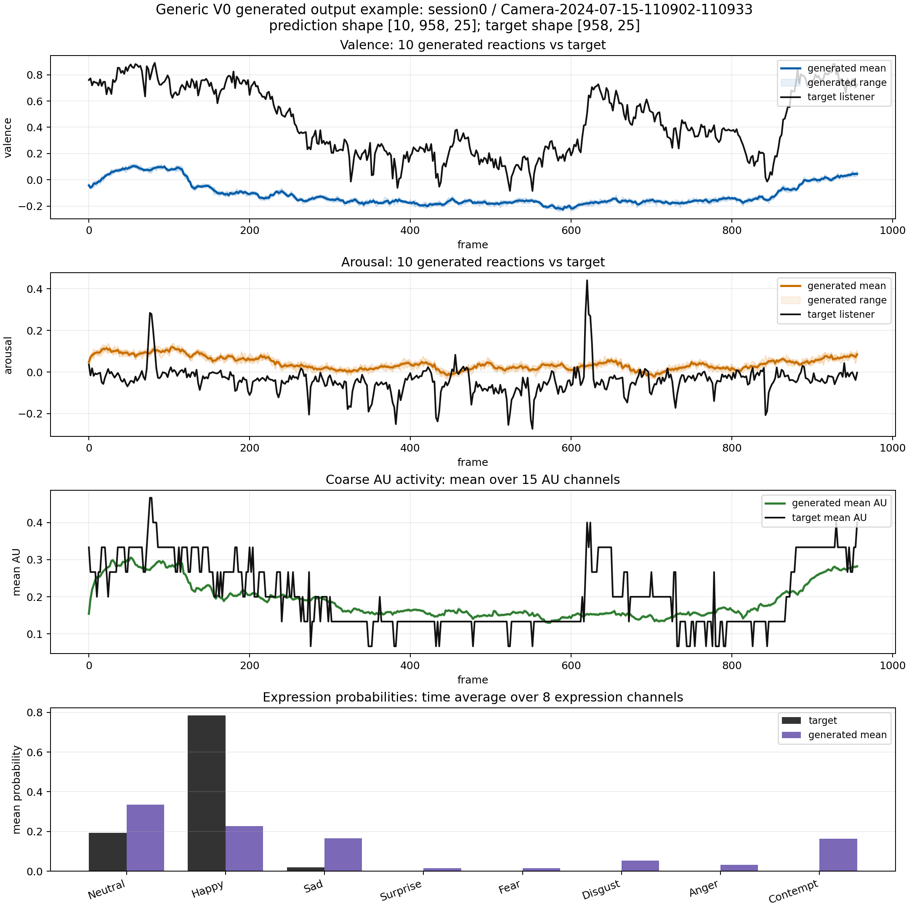
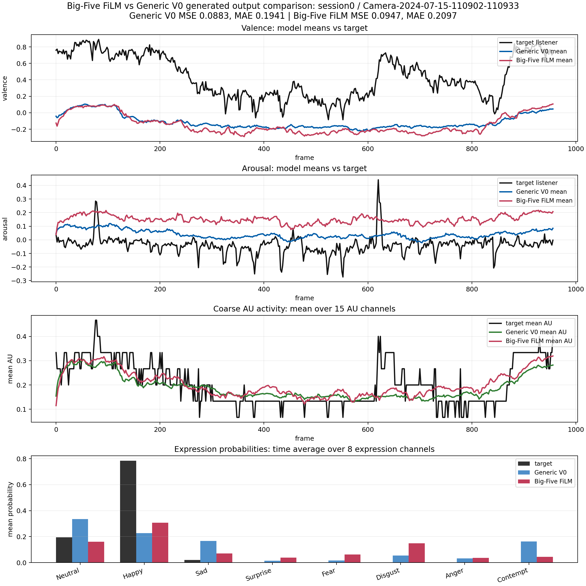
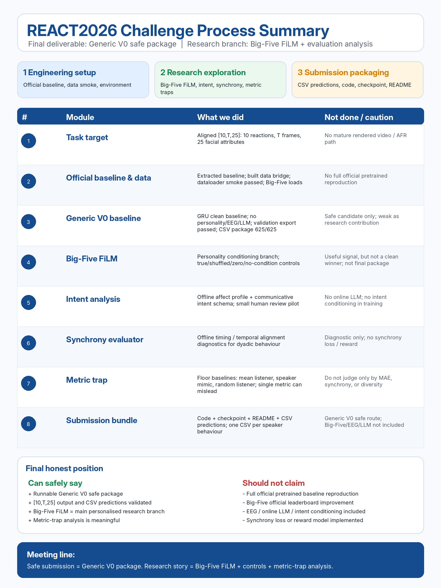

REACT2026 submission-readiness progress
From local validation to organiser-aligned CSV package
June 24 updateGeneric V0 is now the safe REACT2026 submission candidate. The organiser confirmed that the package should include executable code, checkpoint, README, and precomputed CSV predictions. The 625 test CSV files have been exported, validated, zipped, and copied to Google Drive.
Latest submission-readiness dashboard, 2026-06-24.
Current research claim
Generic V0 is the safe submission route because it is auditable, runnable, and organiser-aligned. Big-Five FiLM, intent analysis, and synchrony diagnostics remain the research branch for interpretation, not the final emergency submission package.
Current submission-safety flow
Click stepsSafe baseline candidate
verifiedGeneric V0 is the current safe baseline candidate because it is simple, auditable, trained, and runnable without personality labels, EEG, LLM intent, or new risky architecture changes.
Fixed project contract
Baseline vs Big-Five injection
method diagramThe target is unchanged in both paths: generate 10 plausible listener facial reaction sequences in [10, T, 25] shape. The difference is whether listener personality is injected into the generation pathway.

Generic V0 baseline
Big-Five V1 personality path
What changes
The backbone still solves the same listener reaction generation task. Big-Five V1 adds a conditioning signal, not a new target.
Why FiLM
FiLM keeps the injection controlled: Big-Five traits scale and shift learned hidden features instead of replacing the speaker-driven context.
How it is checked
The method is compared with zero Big-Five, shuffled Big-Five, and no-condition identity controls before treating the signal as meaningful.
Controlled experiment design
Why this is interpretableThe Big-Five result is not treated as meaningful unless it beats controls that test adapter capacity, random traits, and the no-condition pathway.
Main candidate. Listener Big-Five scaled from official 1-5 range to 0-1.
Checks whether added adapter capacity alone explains the gain.
Checks whether arbitrary trait vectors can create the same improvement.
Checks whether the FiLM pathway helps even without personality input.
Protected baseline
Generic V0 stays unchanged. It remains the clean no-personality and no-EEG internal comparison baseline.
Data boundary
Training uses train personality only. Validation uses validation personality for evaluation checks. Test personality is not used for training or model selection.
Current caveat
Local validation evidence is promising, but the official-style metric path still needs careful alignment before making challenge-level claims. The absolute MSE differences are modest, so the claim is a consistent controlled signal rather than a large performance jump.
Evidence explorer
5 matched seeds
Official-scale listener Big-Five FiLM has the lowest 5-seed mean cropped-validation MSE.
Cropped-validation result
MSE 5/5 winsReadout
Official-scale true Big-Five is best in the 5-seed mean cropped-validation comparison. The key interpretation is strongest against shuffled and no-condition controls; MAE is used as a sanity metric, not as the main control-ordering claim.
Validation numbers and generated output example
official-style proxy viewThis page combines the compact validation table requested for review with official-style proxy metrics and concrete generated-output visualizations. It separates the safe submission package from the research interpretation branch.
Official-style metric proxy comparison

120 validation samples per run, computed through the official baseline metric implementation. Big-Five FiLM improves FRC by +12.0%, FRD by +0.4%, and official-style MAE by +2.1% versus Generic V0, but it does not improve TLCC lag or FRVar. This is a validation proxy, not a hidden-test leaderboard result.
What the figure shows
Big-Five FiLM has a positive signal, not a clean win. FRC rises from 0.450 to 0.504, FRD improves slightly from 132.29 to 131.76, and official-style MAE improves from 0.170 to 0.166.
Why the claim stays cautious
Shuffled Big-Five is almost identical on FRC: 0.503 versus 0.504 for true Big-Five. This means the gain may partly come from the adapter branch, extra capacity, or regularisation rather than clean trait-specific information.
Metric trap
No-condition has the strongest FRC proxy at 0.534, which is higher than true Big-Five. Therefore the correct claim is not that Big-Five clearly improves official performance, but that Big-Five FiLM is a useful personalised conditioning branch whose trait-specific benefit is not fully proven.
Timing and diversity
Big-Five does not clearly improve timing or synchrony: TLCC lag is almost unchanged. FRVar drops from 0.00286 to 0.00259, about -9.4%, so Big-Five may make outputs more concentrated rather than more diverse.
Generic V0 output example

Example sample output: `[10, 958, 25]`. The figure shows ten generated valence/arousal curves, AU activity, and expression probability summaries.
Big-Five FiLM vs Generic V0 visual comparison

Same validation sample, same target listener. The plot compares Generic V0 mean prediction with Big-Five FiLM mean prediction across valence, arousal, mean AU activity, and expression probabilities.
Compact official-style table
571 full-val sanity + 120 proxy rows+12.0%
+0.4%
+2.1%
Official-aligned readout
FRC and FRVar are better when higher; FRD, TLCC lag, and official-style MAE are better when lower. Big-Five FiLM has measurable gains over Generic V0 on FRC, FRD, and official-style MAE, but no-condition is stronger on FRC and FRVar. The correct claim is selective improvement plus metric-aware interpretation.
Metric glossary
FRC: facial reaction correlation or CCC-style agreement with plausible listener reactions. FRD: DTW-style distance to plausible listener reaction sequences. TLCC lag: temporal synchrony lag between speaker behaviour and generated listener reaction. FRVar: diversity or variation across generated reactions. Official-style MAE: auxiliary error check on generated facial attributes. These are validation proxy metrics from the official baseline code path, not hidden-test scores.
Local full-validation sanity table
Interpretation
Full-validation MSE/MAE remain useful sanity metrics, but the presentation claim should be anchored to official-style FRC, FRD, TLCC, FRVar, SMSE, and official-style MAE. Big-Five FiLM is useful, but not a universal winner.
Submission boundary
The final safe package remains Generic V0. Big-Five, intent analysis, and synchrony remain research evidence for discussion.
Submission gate: package ready for link review
2026-06-24The organiser confirmed the expected route: executable model code plus checkpoint, precomputed CSV prediction files, README, and a shared submission link. The Generic V0 CSV package is now built and validated.
Candidate bundle: generic_v0_safe_submission_bundle_2026_06_23_csv.zip; SHA256 04E438B2A24A24EF0271C385728F4CEB6AEF31206BFD592315CDE315CD1ABF5F.
1. Confirmed route
Code, checkpoint, README, and precomputed CSV predictions are all included.
2. CSV package
625 CSV files, one per test speaker behaviour, with 25 facial-attribute columns.
3. Clean smoke
ZIP integrity, clean-unzip CSV validation, and CPU inference smoke all passed.
4. Remaining action
Final review of package positioning, then upload/share the submission link. The safe package should stay frozen while research pilots run separately.
Current package state
engineering-readyReady
Generic V0 training, validation export, 625-row test inference, CSV export, CSV validation, README, and clean-unzip smoke checks are complete.
Bundle facts
ZIP size: 1,788,434,929 bytes. CSV files: 625. Validation: 625 / 625 passed. Output contract: `[10,T,25]` flattened into CSV rows.
Guardrail
No EEG, no Big-Five, no LLM intent labels, and no rendered AFR video are included in the safe package. These stay as research branches.
Next research plan
After the safe package is frozen, run a medium-scale offline intent pilot: generate intent labels for roughly 200-500 train samples and 100-200 validation samples, audit 30-50 labels manually, then run a small true-intent vs shuffled-intent smoke test before any larger training.
Presentation summary
submission-ready narrativeThe project now has a safe REACT2026 submission route and a separate research branch. The safe route is the Generic V0 CSV package; the research branch studies Big-Five FiLM, offline intent labels, and synchrony diagnostics.
What is ready
The deliverable is auditable and aligned with the confirmed submission route.
- Generic V0 is trained and selected as the safe baseline candidate.
- The package includes executable code, checkpoint, README, and CSV predictions.
- All 625 test prediction CSV files passed validation.
- Clean-unzip and CPU inference smoke checks passed.
What remains research-only
These components support interpretation, but they are not mixed into the emergency-safe package.
- Big-Five FiLM remains a controlled personalised-conditioning branch.
- Intent labels are offline analysis labels, not official challenge labels.
- Synchrony metrics are diagnostic tools, not training losses.
- EEG and online LLM inference are not used in the final safe package.
Near-term research pilot
Freeze the safe Generic V0 package first. Then test whether offline semantic intent labels add signal through a medium-scale pilot and a shuffled-intent control.
Go / no-go rule
Only scale up intent conditioning if true intent beats shuffled intent and improves validation behaviour in a stable, interpretable way.
Progress estimate
current statusKey decision
positioningRecommended framing
Treat Generic V0 as the safe official submission candidate. Keep Big-Five FiLM, intent analysis, and synchrony diagnostics as the research and interpretation branch.
Why this matters
Mixing unfinished personality or intent conditioning into the final package would increase risk. Keeping them separate gives a cleaner submission and a clearer research story.
Process summary
screenshot-ready
High-level map: engineering setup, research exploration, and submission packaging are separated so the final claim stays accurate.
Research roadmap
LLM intent + dyadic synchronyResearch idea -> current implementation -> next step · 2026-06-24
Core conclusion: the project has reached a safe pre-model-intervention stage. The offline evidence layer is in place, but intent conditioning and synchrony loss have not been added to training yet. This is deliberate: the analysis should first show when personality and intent signals help before changing the generator.
The research direction is to infer a listener reaction intent from speaker multimodal behaviour and listener personality, use that intent as a future conditioning signal, generate listener facial attributes, and evaluate whether the generated reaction is temporally and socially appropriate.
Nine-stage roadmap status
overviewMedium-scale intent batch prepared
500 train + 200 valWhat was prepared
A 700-row candidate set, a two-layer annotation template, an offline LLM prompt, and a 9-step pipeline status table are ready for the next annotation round.
What it tests
Whether semantic listener intent can explain when Big-Five helps or fails, before adding intent conditioning to the generator.
Guardrail
These are not official labels and not training labels yet. They must be generated offline, frozen, and audited before any true-intent versus shuffled-intent smoke test.
Most important current judgments
1 · Generic V0 is the clean baseline
It should remain unchanged and serve as the comparison point for personality, intent, and synchrony analysis.
2 · Big-Five FiLM is promising but selective
It has controlled evidence, but it is not a universal improvement across all diagnostics.
3 · Big-Five appears more related to style and intensity
The current evidence suggests stronger links to reaction style than to temporal synchrony.
4 · Timing needs separate analysis
Timing may require intent timing labels, lag-aware evaluation, or a separate mechanism in future work.
Implementation roadmap
what is implemented, what is held backThis page keeps the final submission path separate from future research extensions.
Speaker multimodal input
Stable speaker audio features, speaker facial attributes, listener targets, and train/validation/test manifests.
Add transcript or semantic context only after the safe submission path is complete.
Offline reaction intent labels
Offline annotation schema, validator, review app, and LLM-assisted draft workflow. No external LLM is called during training.
Generate offline intent labels for roughly 200-500 train samples and 100-200 validation samples, then manually audit 30-50 labels before using them in any smoke test.
Intent labels are internal research labels, not official REACT2026 labels.
Generic V0 and Big-Five FiLM
Generic V0 is the safe no-personality/no-EEG package. Big-Five FiLM has true, shuffled, zero, and no-condition controls.
Use validation results to interpret when personality helps before changing the final generator.
25-dimensional facial attributes
Each speaker behaviour produces 10 listener reactions with shape [10, T, 25]. For submission, these are flattened into one CSV file per speaker behaviour.
The safe package focuses on 25-d facial-attribute CSV output. A mature rendered AFR video path is not included.
Validation metrics and diagnostics
MSE/MAE tables, generated-output visualization, official-style diagnostic checks, and offline synchrony metrics.
Big-Five FiLM is slightly better on full-validation MSE/MAE, but the claim remains controlled and cautious because the gaps are modest.
Intent conditioning and synchrony loss
The current evidence does not yet justify adding synchrony loss or large intent-conditioned training.
Run a small intent-conditioning smoke test only after label audit: Generic V0, intent-only, Big-Five + intent, shuffled intent, and no-intent controls. Scale up only if true intent clearly beats shuffled intent.